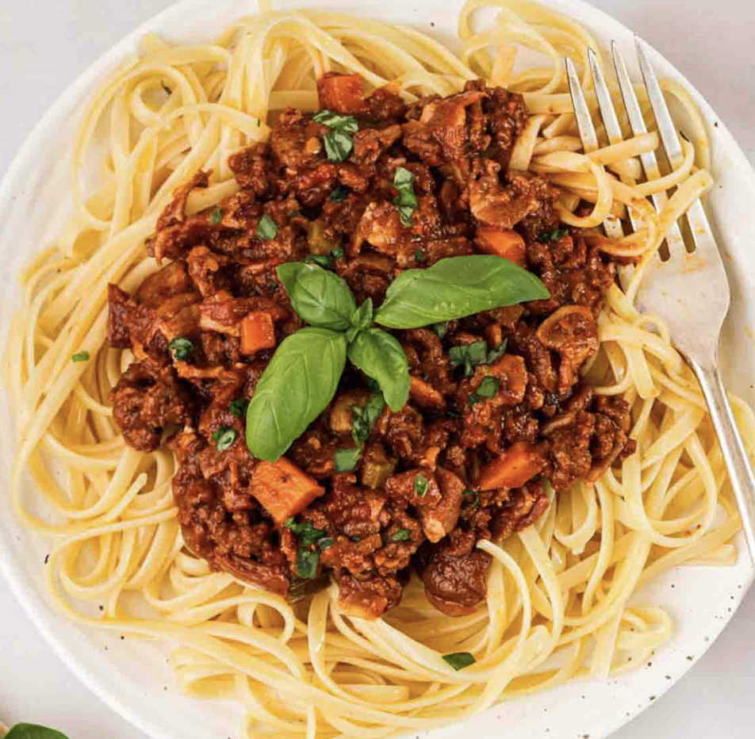

Spaghetti Bolognese

Ingredients
- 1 1/2 tbsp olive oil
- 2 garlic cloves
- 1 onion
- 1lb (500g) beef mince
- 1/2 cup (125 ml) water
- 2 beef bouillon cubes
- 800g crushed tomato
- 2 tbsp tomato paste
- 2 tsp white sugar
- 2 tsp Worcestershire sauce
- 2 dried bay leaves
- 2 sprigs fresh thyme
- 3/4 tsp cooking salt
- 1/2 tsp black pepper
- 400 g spaghetti
- Parmesan cheese
Instructions
- Sauté – Heat oil in a large pot or deep skillet over medium high heat. Add onion and garlic, cook for 3 minutes or until light golden and softened.
- Cook beef – Turn heat up to high and add beef. Cook, breaking it up as your go, until browned.
- Add the water. Bring to simmer and cook for 1 minute, scraping the bottom of the pot.
- Simmer – Add the remaining ingredients. Stir, bring to a simmer then turn down to medium so it bubbles gently. Cook for 20 – 30 minutes (no lid), adding water if the sauce gets too thick for your taste. Stir occasionally.
- Slow simmer option: really takes this to another level, if you have the time! Add 3/4 cup of water, cover with lid and simmer on very low for 2 – 2.5 hours, stirring every 30 minutes or so. Uncover, simmer 20 minutes to thicken sauce.
- Taste and add more salt it desired. Serve over spaghetti.
- Enjoy!